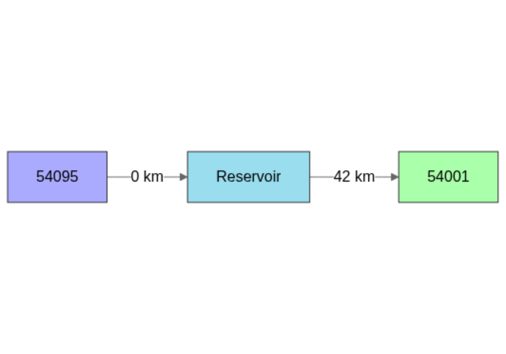
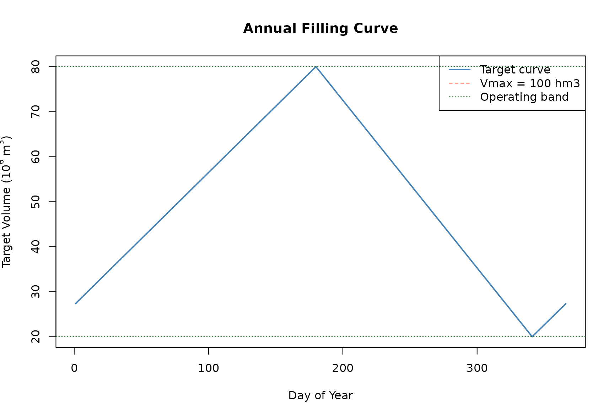
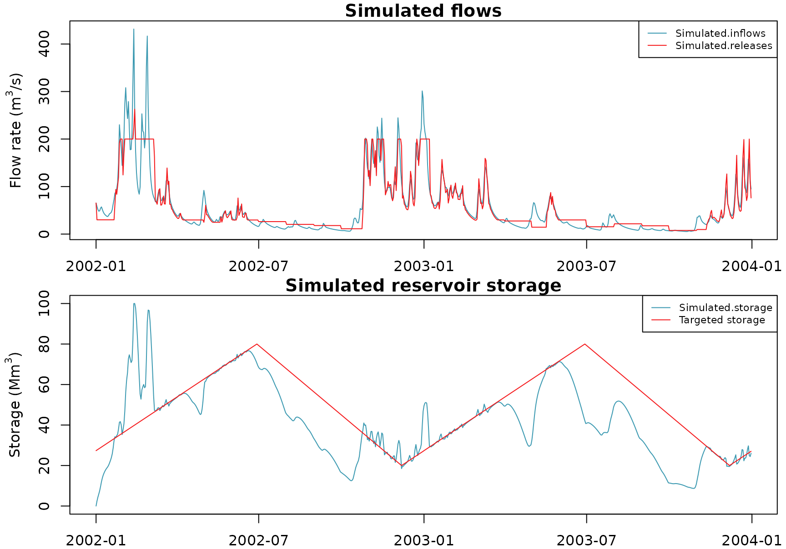

Severn_07: Combine tactical and operational planning management
Source:vignettes/V07_Combine_tactical_operational_management.Rmd
V07_Combine_tactical_operational_management.Rmd#> Loading required package: airGR#>
#> Attaching package: 'airGRiwrm'#> The following objects are masked from 'package:airGR':
#>
#> Calibration, CreateCalibOptions, CreateInputsCrit,
#> CreateInputsModel, CreateRunOptions, RunModel#>
#> Attaching package: 'lubridate'#> The following objects are masked from 'package:base':
#>
#> date, intersect, setdiff, unionIntroduction
Watershed-scale water resource management involves balancing ecological, social, and economic needs through structured planning approaches. Tactical and operational planning play distinct but complementary roles in achieving sustainable water use, flood control, and ecosystem health.
Tactical planning in watershed management focuses on mid-term strategies, such as infrastructure development, policy creation, and risk mitigation to ensure sustainable water use over seasons or years.
Operational planning handles short-term, day-to-day activities such as water allocation, reservoir release decisions, monitoring, and emergency response.
airGRiwrm offers various tools for introducing human influences into catchment hydrological modelling, which can be combined to represent these different planning levels. This vignette demonstrates how to integrate both approaches in a single simulation workflow, using a reservoir (dam) project on the Severn River as a case study.
Study Case Presentation
Project scenario
The example in this tutorial takes place on the Severn River in the United Kingdom. The data is extracted from the CAMELS-GB database Coxon et al. (2020), which provides catchment attributes and hydro-meteorological timeseries for 671 catchments across Great Britain.
We consider a reservoir (dam) built directly on the river at gauging station “54095”, located upstream of gauge “54001”. The dam has one objective:
| Objective | Description |
|---|---|
| Water supply | Maintain a minimum daily release of 700,000 m3/day for downstream supply |
The reservoir is managed through two control layers:
| Planning Level | Mechanism | Time Scale | Purpose |
|---|---|---|---|
| Operational | Filling curve (controller) | Daily | Guide reservoir releases toward annual volume targets with constrained minimum release |
| Tactical | Monthly restrictions | Monthly | Set release fraction based on reservoir volume relative to objective |
How it works
Storage mechanism: Water flowing through gauging station “54095” enters the reservoir directly. The reservoir stores water according to an annual filling curve that defines target storage volumes throughout the year.
Release mechanism: The reservoir releases water downstream to node “54001”. A PD controller computes the desired release rate to track the filling curve, then clamps it between a scaled minimum and a hard maximum. The minimum scales with the reservoir fill ratio.
Tactical adjustment: At each monthly step, the reservoir volume is assessed relative to the filling-curve objective. The ratio
release_fraction = min(1, V_current / V_objective)is computed and stored, proportionally scaling the minimum allowed release for that month.
data(Severn)
Severn$BasinsInfo#> gauge_id gauge_name gauge_lat gauge_lon area elev_mean
#> 1 54057 Severn at Haw Bridge 51.95 -2.23 9885.46 145
#> 2 54032 Severn at Saxons Lode 52.05 -2.20 6864.88 170
#> 3 54001 Severn at Bewdley 52.38 -2.32 4329.90 175
#> 4 54095 Severn at Buildwas 52.64 -2.53 3722.68 186
#> 5 54002 Avon at Evesham 52.09 -1.94 2207.95 99
#> 6 54029 Teme at Knightsford Bridge 52.20 -2.39 1483.65 212
#> station_type flow_period_start flow_period_end bankfull_flow downstream_id
#> 1 VA 1971-07-01 2015-09-30 460 <NA>
#> 2 US 1970-10-01 2015-09-30 340 54057
#> 3 US 1970-10-01 2015-09-30 420 54032
#> 4 US 1984-03-01 2015-09-30 285 54001
#> 5 VA 1970-10-01 2015-09-30 125 54057
#> 6 FV 1970-10-01 2015-09-30 190 54032
#> distance_downstream
#> 1 NA
#> 2 15
#> 3 45
#> 4 42
#> 5 43
#> 6 32Network Setup
We construct a self-contained network from the Severn
dataset. The network includes two gauged stations (54095
and 54001) and a reservoir built directly on the river at
gauging station 54095.
Building the node table
# Extract base node information from Severn data
nodes_Severn <- Severn$BasinsInfo[, c(
"gauge_id",
"downstream_id",
"distance_downstream",
"area"
)]
names(nodes_Severn) <- c("id", "down", "length", "area")
nodes_Severn$model <- "RunModel_GR4J"
# Reduce to the two nodes of interest: 54095 (upstream) and 54001 (downstream)
nodes <- nodes_Severn[nodes_Severn$id %in% c("54095", "54001"), ]
# Node 54001 becomes the outlet -- no further downstream connection
nodes$down[nodes$id == "54001"] <- NA
nodes$length[nodes$id == "54001"] <- NA
# Add the Reservoir row: dam built directly on the river at 0 km downstream of 54095.
# The RunModel_GR4J row for 54095 now feeds into the Reservoir instead of 54001.
nodes <- rbind(
nodes,
data.frame(
id = "Reservoir",
down = "54001",
length = 42,
area = NA,
model = "RunModel_Reservoir",
stringsAsFactors = FALSE
)
)
# Update 54095 to feed into the Reservoir (dam built at 0 km downstream)
nodes$down[nodes$id == "54095"] <- "Reservoir"
nodes$length[nodes$id == "54095"] <- 0
nodes#> id down length area model
#> 3 54001 <NA> NA 4329.90 RunModel_GR4J
#> 4 54095 Reservoir 0 3722.68 RunModel_GR4J
#> 1 Reservoir 54001 42 NA RunModel_ReservoirIn this network:
- “54095” is the upstream gauged station where the dam/reservoir is built directly downstream. The GR4J model simulates the naturalized runoff here.
-
Reservoir is the dam that stores water from the
river and releases it downstream. It receives all flow from
54095and releases to54001. - “54001” is the downstream gauged station receiving the regulated release from the Reservoir.
Creating the GRiwrm object
griwrm <- CreateGRiwrm(nodes)
griwrm#> id down length area model donor
#> 4 54095 Reservoir 0 3722.68 RunModel_GR4J 54095
#> 1 Reservoir 54001 42 NA RunModel_Reservoir Reservoir
#> 3 54001 <NA> NA 4329.90 RunModel_GR4J 54001Visualising the network
plot(griwrm)
The diagram shows the upstream gauged node (54095), the
reservoir (Reservoir) built directly on the river, and the
downstream gauged node (54001). All flow from the catchment
at 54095 passes through the reservoir before reaching the
outlet at 54001.
Base Simulation
Before introducing closed-loop control, we set up the meteorological inputs, model parameters, and run a preliminary open-loop simulation to establish the reservoir’s initial state.
Meteorological and observation data
BasinsObs <- Severn$BasinsObs
DatesR <- BasinsObs[[1]]$DatesR
PrecipTot <- cbind(sapply(BasinsObs, function(x) x$precipitation))
PotEvapTot <- cbind(sapply(BasinsObs, function(x) x$peti))
Qobs <- cbind(sapply(BasinsObs, function(x) x$discharge_spec))
# Convert to sub-catchment scale
Precip <- ConvertMeteoSD(griwrm, PrecipTot)
PotEvap <- ConvertMeteoSD(griwrm, PotEvapTot)Human influence inputs
We initialise the reservoir release time series to zero; the PD controller will dynamically compute the release rate at each time step:
-
Qrelease (dam release): Initialised to
1E15for keeping the reservoir empty during warm-up simulation period — the controller will compute the release rate, clamped between a scaled minimum and a hard maximum (see Operational Control section below).
Qrelease <- data.frame(Reservoir = rep(1E15, length(DatesR)))Creating the InputsModel object
InputsModel <- suppressWarnings(
CreateInputsModel(
griwrm,
DatesR,
Precip,
PotEvap,
Qrelease = Qrelease
)
)#> CreateInputsModel.GRiwrm: Processing sub-basin 54095...#> CreateInputsModel.GRiwrm: Processing sub-basin Reservoir...#> CreateInputsModel.GRiwrm: Processing sub-basin 54001...
str(InputsModel, max.level = 1)#> List of 3
#> $ 54095 :List of 14
#> ..- attr(*, "FeatFUN_MOD")=List of 11
#> ..- attr(*, "class")= chr [1:4] "RunModel_GR4J" "InputsModel" "daily" "GR"
#> $ Reservoir:List of 18
#> ..- attr(*, "FeatFUN_MOD")=List of 11
#> ..- attr(*, "class")= chr [1:5] "RunModel_Reservoir" "InputsModel" "daily" "SD" ...
#> $ 54001 :List of 19
#> ..- attr(*, "FeatFUN_MOD")=List of 11
#> ..- attr(*, "class")= chr [1:5] "RunModel_GR4J" "InputsModel" "daily" "GR" ...
#> - attr(*, "class")= chr [1:2] "GRiwrmInputsModel" "list"
#> - attr(*, "GRiwrm")=Classes 'GRiwrm' and 'data.frame': 3 obs. of 6 variables:
#> - attr(*, "TimeStep")= num 86400Run options and calibration parameters
We define a warm-up period covering the initial years of the dataset, followed by a simulation period from 2000 to 2009. The full simulation will be extended month by month in the time-loop section below.
date_start <- "2002-01-01"
date_end <- "2003-12-31"
IndPeriod_Run <- seq(
which(format(InputsModel[[1]]$DatesR, format = "%Y-%m-%d") == date_start),
which(format(InputsModel[[1]]$DatesR, format = "%Y-%m-%d") == date_end)
)
IndPeriod_WarmUp <- seq(1, IndPeriod_Run[1] - 1)Default (Michel) calibration parameters are provided for the gauged
stations. We also add a parameter set for the Reservoir:
c(Vmax, celerity), where Vmax = 100 × 10⁶ m³
is the maximum reservoir capacity and celerity = 1 is the
inflow time-lag parameter.
Operational Control: The Filling Curve
What is a filling curve?
A filling curve is a tactical-Operational planning tool used by reservoir operators to define target storage volumes throughout the year. It typically prescribes higher volumes during the dry season (to ensure water supply) and lower volumes during the wet season (to reserve spillway capacity for flood events).
Defining the annual targets
We define a yearly filling curve that oscillates between 20 × 10⁶ m³ (winter minimum) and 80 × 10⁶ m³ (summer maximum), staying within the reservoir capacity of 100 × 10⁶ m³:
curve <- approx(
x = c(31 * 11 - 365, 30 * 6, 31 * 11, 366 + 30 * 6),
y = c(20E6, 80E6, 20E6, 80E6),
xout = 1:366
)$y
# Visualise the filling curve
plot(
1:366,
curve / 1E6,
type = "l",
lwd = 2,
xlab = "Day of Year",
ylab = expression("Target Volume (10"^6 * " m"^3 * ")"),
main = "Annual Filling Curve",
col = "steelblue"
)
abline(h = 100, lty = 2, col = "red") # Vmax reference
abline(h = 80, lty = 3, col = "darkgreen")
abline(h = 20, lty = 3, col = "darkgreen")
legend(
"topright",
legend = c("Target curve", "Vmax = 100 hm3", "Operating band"),
col = c("steelblue", "red", "darkgreen"),
lty = c(1, 2, 3),
lwd = c(2, 1, 1)
)
The PD controller with hard constraints
A proportional-derivative (PD) controller compares the current reservoir volume to the filling-curve target and computes a release command. The computed release is then clamped between a minimum and maximum bound:
| Bound | Value |
|---|---|
| Maximum |
QrelMax = 200 * 86400 m³/day (~17.3 × 10⁶ m³/day) |
| Minimum |
release_fraction x QrelMin where QrelMin =
30 * 86400 m³/day (~2.6 × 10⁶ m³/day) |
The key mechanism is the release_fraction, computed
monthly by the tactical layer as
min(1, V_current / V_objective). When the reservoir volume
is below the filling-curve target, the fraction is less than 1,
proportionally reducing the allowed minimum release. When the volume
meets or exceeds the target, the full mandatory minimum of 30 m³/s
(~2,592,000 m³/day) applies.
fn_filling_curve_factory <- function(sv, curve, QrelMax, QrelMin) {
# Shared state across controller calls
if (is.null(sv$state)) {
sv$state <- list(prevError = 0, release_fraction = 1.0)
}
# PD gains
Kp <- 1
Kd <- 0.1
function(Y) {
Vsim <- Y[1] + Y[2] # Current simulated volume with inflows
j <- as.numeric(format(sv$ts.date, "%j")) # Day of year
Vobj_ts <- approx(x = 1:366, y = curve, xout = j)$y # Target for today
error <- Vsim - Vobj_ts
dError <- error - sv$state$prevError
# Step 1: Compute Qrelease from PD controller
ctrl_action <- Kp * error + Kd * dError
sv$state$prevError <- error
Qrelease <- ctrl_action
# Step 2: Apply hard constraints -- clamp between scaled minimum and maximum
frac <- sv$state$release_fraction
Qrelease <- max(frac * QrelMin, min(QrelMax, Qrelease))
# Return a single-column matrix with the release command
return(cbind(Qrelease))
}
}Setting up the Supervisor
sv <- CreateSupervisor(InputsModel)Instantiate the controller function with the supervisor and filling curve:
fn_filling_curve <- fn_filling_curve_factory(
sv = sv,
curve = curve,
QrelMax = 200 * 86400, # Maximum release rate (m3/day)
QrelMin = 30 * 86400 # Mandatory minimum release rate (m3/day)
)The factory pattern ensures the controller:
- Reads the current reservoir volume through
Y = "Reservoir$Vsim". - Computes the PD control action based on the filling-curve error.
- Clamps the computed release between
release_fraction * QrelMinandQrelMax. - Returns a single-column matrix with the release command for
"Reservoir$Qrelease". - Maintains internal state (previous error and release fraction) across time-steps.
Register the filling-curve controller with the supervisor:
CreateController(
sv,
ctrl.id = "FillingCurve",
Y = c("Reservoir$Vsim", "54095"), # Read current reservoir volume with inflows
U = "Reservoir$Qrelease", # Release command only
FUN = fn_filling_curve # PD control logic
)#> The controller 'FillingCurve' has been added to the supervisorTactical Management: Monthly Restrictions
Volume-based restriction rule
In addition to the filling-curve controller, we implement a tactical
rule: at the start of each month, the ratio of the current reservoir
volume to the filling-curve objective volume is computed. This ratio,
called release_fraction, scales the minimum allowed release
for the upcoming month.
The release fraction is computed as:
release_fraction = min(1, V_current / V_objective)
When V_current < V_objective, the fraction is less
than 1, proportionally reducing the minimum release below QrelMin
(potentially to near zero when the reservoir is nearly empty). When
V_current meets or exceeds the objective, the fraction is
1, so the full mandatory minimum of 30 m³/s (~2,592,000 m³/day)
applies.
The final daily release is then computed as:
Qrelease = max(release_fraction * QrelMin, min(QrelMax, PD_controller_output))
This ensures that when the reservoir is below target, both the controller output and the minimum floor are reduced, allowing the reservoir to recover more quickly.
Month-by-month time-loop simulation
The simulation runs in a time loop, processing one month at a time. At each iteration:
- The tactical restriction is checked and the release fraction is
computed as
min(1, V_current / V_objective). - The controller determines the release rate at each daily time step, clamping the PD output between the scaled minimum and hard maximum.
- The model advances through the month’s time steps.
# Define simulation period: from 01/01/2000 up to 31/12/2009
dfTS <- data.frame(
DatesR = DatesR,
yearmonth = format(DatesR, "%Y-%m")
)
tactical_months <- unique(dfTS$yearmonth[
dfTS$yearmonth >= format(as.Date(date_start), "%Y-%m") &
dfTS$yearmonth <= format(as.Date(date_end), "%Y-%m")
])
first_run <- TRUE
# Store the tactical release fraction; default to 1 (unrestricted)
release_fraction <- 1.0
for (ym in tactical_months) {
message(sprintf("Processing period: %s", ym), appendLF = FALSE)
# Extract the current month's indices
ym_IndPeriod_Run <- which(dfTS$yearmonth == ym)
if (first_run) {
message(" -> Release fraction = 1.0 (initial run)")
RunOptions <- CreateRunOptions(
InputsModel,
IndPeriod_WarmUp = IndPeriod_WarmUp,
IndPeriod_Run = ym_IndPeriod_Run,
IniStates = list(Reservoir = c("Reservoir.V" = 0)),
warnings = FALSE
)
OM <- suppressMessages(
RunModel(
sv,
RunOptions = RunOptions,
Param = Param
)
)
first_run <- FALSE
} else {
# --- Tactical rule: compute release fraction from volume ratio ---
V_current <- OM$Reservoir$StateEnd$Reservoir$V
# Get the day-of-year for the first day of this month
first_day_ym <- as.Date(paste0(ym, "-01"))
j_first <- as.numeric(format(first_day_ym, "%j"))
V_objective <- approx(x = 1:366, y = curve, xout = j_first)$y
# Compute the release fraction: ratio of current to objective volume
# When V_current < V_objective, fraction < 1, reducing the minimum release
# When V_current >= V_objective, fraction = 1, full minimum applies
release_fraction <- min(1, V_current / V_objective)
# Update the supervisor state so the controller reads the new fraction
sv$state$release_fraction <- release_fraction
message(sprintf(
" -> Release fraction: %.2f (V_cur=%.1f, V_obj=%.1f)",
release_fraction,
V_current / 1E6,
V_objective / 1E6
))
# Run the model for the current month with supervisor control
OM <- suppressWarnings(
RunModel(
OM,
InputsModel = sv,
RunOptions = RunOptions,
IndPeriod_Run = ym_IndPeriod_Run
)
)
}
}#> Processing period: 2002-01 -> Release fraction = 1.0 (initial run)
#> Processing period: 2002-02 -> Release fraction: 1.00 (V_cur=37.7, V_obj=36.5)
#> Processing period: 2002-03 -> Release fraction: 1.00 (V_cur=96.8, V_obj=44.7)
#> Processing period: 2002-04 -> Release fraction: 0.99 (V_cur=53.3, V_obj=53.8)
#> Processing period: 2002-05 -> Release fraction: 0.83 (V_cur=51.8, V_obj=62.6)
#> Processing period: 2002-06 -> Release fraction: 0.99 (V_cur=70.9, V_obj=71.8)
#> Processing period: 2002-07 -> Release fraction: 0.87 (V_cur=69.3, V_obj=79.3)
#> Processing period: 2002-08 -> Release fraction: 0.68 (V_cur=46.1, V_obj=67.7)
#> Processing period: 2002-09 -> Release fraction: 0.60 (V_cur=33.6, V_obj=56.1)
#> Processing period: 2002-10 -> Release fraction: 0.37 (V_cur=16.8, V_obj=45.0)
#> Processing period: 2002-11 -> Release fraction: 1.00 (V_cur=33.6, V_obj=33.4)
#> Processing period: 2002-12 -> Release fraction: 0.97 (V_cur=21.5, V_obj=22.2)
#> Processing period: 2003-01 -> Release fraction: 1.00 (V_cur=46.7, V_obj=27.4)
#> Processing period: 2003-02 -> Release fraction: 0.98 (V_cur=35.6, V_obj=36.5)
#> Processing period: 2003-03 -> Release fraction: 0.99 (V_cur=44.4, V_obj=44.7)
#> Processing period: 2003-04 -> Release fraction: 0.92 (V_cur=49.4, V_obj=53.8)
#> Processing period: 2003-05 -> Release fraction: 0.48 (V_cur=30.2, V_obj=62.6)
#> Processing period: 2003-06 -> Release fraction: 0.99 (V_cur=71.2, V_obj=71.8)
#> Processing period: 2003-07 -> Release fraction: 0.51 (V_cur=40.7, V_obj=79.3)
#> Processing period: 2003-08 -> Release fraction: 0.72 (V_cur=48.9, V_obj=67.7)
#> Processing period: 2003-09 -> Release fraction: 0.58 (V_cur=32.7, V_obj=56.1)
#> Processing period: 2003-10 -> Release fraction: 0.25 (V_cur=11.4, V_obj=45.0)
#> Processing period: 2003-11 -> Release fraction: 0.32 (V_cur=10.7, V_obj=33.4)
#> Processing period: 2003-12 -> Release fraction: 1.00 (V_cur=22.8, V_obj=22.2)Results
Reservoir volume tracking
We can visualise how the simulated reservoir volume follows (or deviates from) the filling curve target over the simulation period:
# Expand the annual filling curve to cover the full simulation period
# by repeating it for each year
ydoys <- as.numeric(format(as.Date(OM[[1]]$DatesR), "%j"))
curve_full <- approx(x = 1:366, y = curve, xout = ydoys)$y
# Plot Reservoir volume, inflows, and release
plot(OM$Reservoir, Vobs = curve_full)
One can observe that the reservoir’s flow release follows the restriction ratio during low‑flow periods, preventing the reservoir from emptying.
Key Takeaways
This vignette demonstrated how tactical and operational planning layers can be integrated in airGRiwrm through a dam/reservoir project:
| Planning Level | Tool | Purpose |
|---|---|---|
| Tactical | Monthly release fraction | Scale minimum release based on volume ratio to objective |
| Operational | Filling curve (PD controller) | Daily volume tracking with constrained release bounds |
The Supervisor / Controller architecture in
airGRiwrm provides a flexible framework for implementing custom water
management rules. Controllers can read simulated states (flows, volumes,
etc.) and adjust model inputs (releases) at each time step, enabling
realistic closed-loop simulations of regulated water systems.
In this example, a single controller manages the dam release with a
key design feature: the release is clamped between a scaled minimum and
a hard maximum. The scaling factor (release_fraction) is
computed monthly as min(1, V_current / V_objective). When
the reservoir volume is below the filling-curve target, both the
controller’s computed output and the minimum floor are proportionally
reduced, allowing the reservoir to recover faster. When the volume meets
or exceeds the target, the full release range from QrelMin to QrelMax is
available.
Summary of the control workflow
- The base simulation (initial run) sets up the reservoir from an empty starting state and provides the hydrological context.
- The operational controller runs at every time step,
comparing the current volume to the filling curve via a PD controller,
then clamping the computed release between
release_fraction * QrelMinandQrelMax. - The tactical layer interrupts the monthly cycle to
compute
release_fraction = min(1, V_current / V_objective), storing it in the supervisor state for the controller to use during the month. - The combined control ensures both daily responsiveness (filling curve tracking) and mid-term sustainability (tactical volume-based restrictions), while adapting the minimum release to the actual reservoir state.
References
Coxon, G., Addor, N., Bloomfield, J.P., Freer, J., Fry, M., Hannaford, J., Howden, N.J.K., Lane, R., Lewis, M., Robinson, E.L., Wagener, T. and Woods, R. (2020). Catchment attributes and hydro-meteorological timeseries for 671 catchments across Great Britain (CAMELS-GB). NERC Environmental Information Data Centre.